# 1. 适配器模式
含义：字面意思相当于” 转换接头 “。
适配器的模式结构
1. 对象适配器
构成原则：实现了其中一个对象的接口（service），并对另一个对象 (client) 进行封装。
含义：对象适配器相当于银行柜姐；大致流程如下
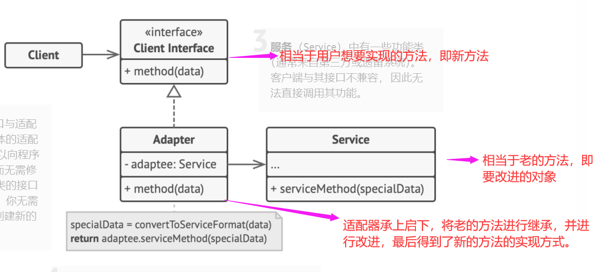
- 客户端 （Client） 是包含当前程序业务逻辑的类。
- 客户端接口 （Client Interface） 描述了其他类与客户端代码合作时必须遵循的协议。
- 服务 （Service） 中有一些功能类 （通常来自第三方或遗留系统）。 客户端与其接口不兼容， 因此无法直接调用其功能。
- 适配器 （Adapter） 是一个可以同时与客户端和服务交互的类： 它在实现客户端接口的同时封装了服务对象。 适配器接受客户端通过适配器接口发起的调用， 并将其转换为适用于被封装服务对象的调用。
- 客户端代码只需通过接口与适配器交互即可， 无需与具体的适配器类耦合。 因此， 你可以向程序中添加新类型的适配器而无需修改已有代码。 这在服务类的接口被更改或替换时很有用： 你无需修改客户端代码就可以创建新的适配器类。
2. 类适配器
构成原则：适配器同时实现了对两个对象的继承。（注：这种方式仅仅只能在支持多重继承的编程语言中实现，如 c++)。
含义：直接将适配器 Adapter 作为当前客户端和其他客户端合作的载体而无需当前客户端进行事件的参与 -- 即最后生成的适配器可替代已有的客户端类进行使用。
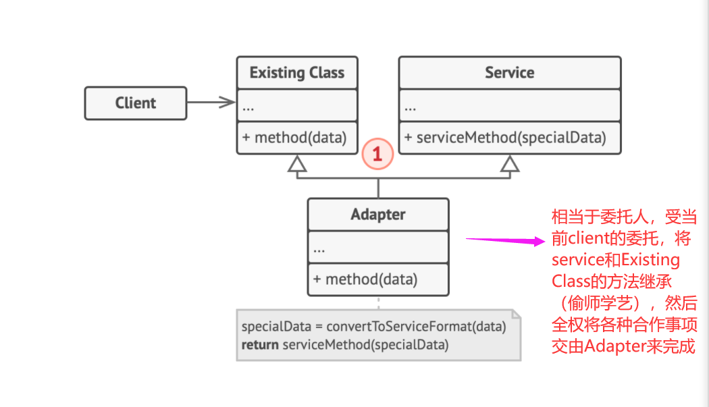
# 应用背景
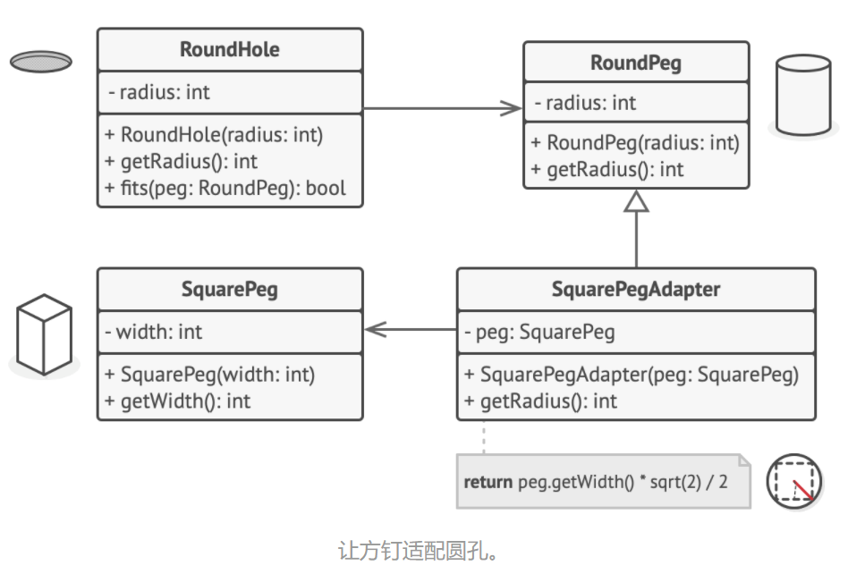
类适配器伪代码：
// 假设你有两个接口相互兼容的类：圆孔（RoundHole）和圆钉（RoundPeg）。 | |
class RoundHole is | |
constructor RoundHole(radius) { ... } | |
method getRadius() is | |
// 返回孔的半径。 | |
method fits(peg: RoundPeg) is | |
return this.getRadius() >= peg.getRadius() | |
class RoundPeg is | |
constructor RoundPeg(radius) { ... } | |
method getRadius() is | |
// 返回钉子的半径。 | |
// 但还有一个不兼容的类：方钉（SquarePeg）。 | |
class SquarePeg is | |
constructor SquarePeg(width) { ... } | |
method getWidth() is | |
// 返回方钉的宽度。 | |
// 适配器类让你能够将方钉放入圆孔中。它会对 RoundPeg 类进行扩展，以接收适 | |
// 配器对象作为圆钉。 | |
class SquarePegAdapter extends RoundPeg is | |
// 在实际情况中，适配器中会包含一个 SquarePeg 类的实例。 | |
// 这里是重中之重，Adapter 的作用就是 “承上启下” | |
private field peg: SquarePeg | |
constructor SquarePegAdapter(peg: SquarePeg) is | |
this.peg = peg | |
method getRadius() is | |
// 适配器会假扮为一个圆钉， | |
// 其半径刚好能与适配器实际封装的方钉搭配起来。 | |
return peg.getWidth() * Math.sqrt(2) / 2 | |
// 函数调用 | |
// 客户端代码中的某个位置。 | |
hole = new RoundHole(5) | |
rpeg = new RoundPeg(5) | |
hole.fits(rpeg) // true | |
small_sqpeg = new SquarePeg(5) | |
large_sqpeg = new SquarePeg(10) | |
hole.fits(small_sqpeg) // 此处无法编译（类型不一致）。 | |
small_sqpeg_adapter = new SquarePegAdapter(small_sqpeg) | |
large_sqpeg_adapter = new SquarePegAdapter(large_sqpeg) | |
hole.fits(small_sqpeg_adapter) //true，这里很关键 | |
hole.fits(large_sqpeg_adapter) // false |
注意的点：
类适配器在使用的时候采用 class Adapter extend Service implement ClientInterface
对象适配器使用的时候采用 class Adapter implement ClientInterface
Java 代码：https://refactoringguru.cn/design-patterns/adapter/java/example
# 2. 桥接模式
简而言之，就是个遥控器，将两个维度变化的事物进行交互使用。实现的是对象的组合而非继承。
比如说：如下例子我们在代码工厂制作多颜色的物体时，首先要明确 1. 做的是什么形状的物体（球形？方形）2. 等把这个物体建模建好了之后，才能添加诸如颜色（蓝色？红色？）的属性。
在这种背景下，给我们的对象拓展会带来一定程度的麻烦，比如说下图：我们想要拓展一个颜色（比如说粉色）时，不能仅仅拓展一个颜色而已，拓展完粉色球体和粉色正方体之后，才能完完全全包含所有可能的形状颜色组合。这样一来，我们每次拓展的种类数，每次都要呈指数式增加，这样会带来极大的不便性。
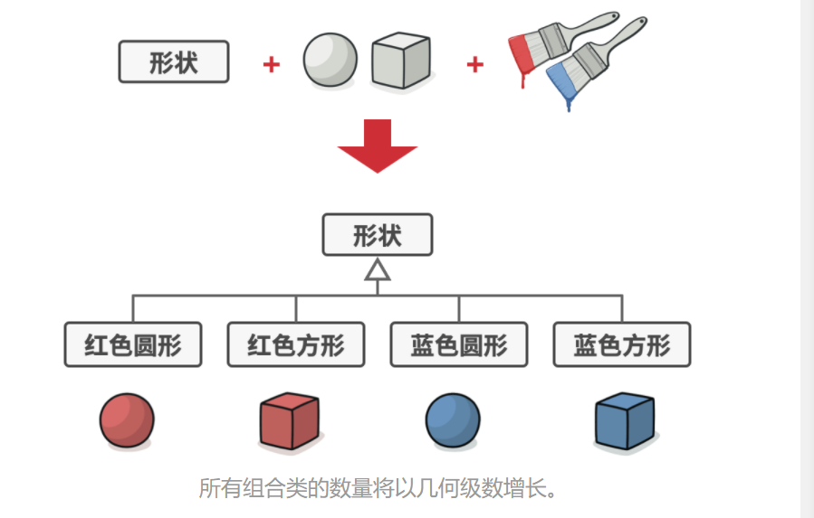
于是我们选择下面这种 “抽象 -- 实现” 的方式来进行重构
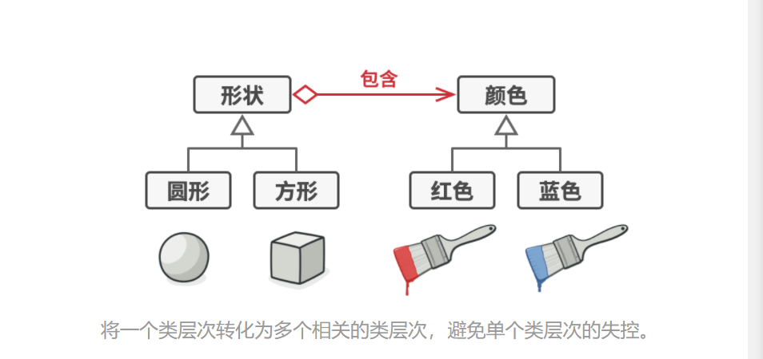
将颜色类独立出来，当作形状类的接口，供形状调用，每次要增加颜色时，只需要对接口进行拓展即可。
# 1. 什么是抽象 - 实现
上文我们提到抽象 - 实现一词，这个说法主要是源于桥接模式的官方定义：
抽象部分 （也被称为接口） 是一些实体的高阶控制层。 该层自身不完成任何具体的工作， 它需要将工作委派给实现部分层 （也被称为平台）
简而言之，就是 “遥控器”，点哪指哪，要啥干啥。
需要注意的是对遥控器而言，具体的内部实现是透明的。
# 结构：

# 应用背景：
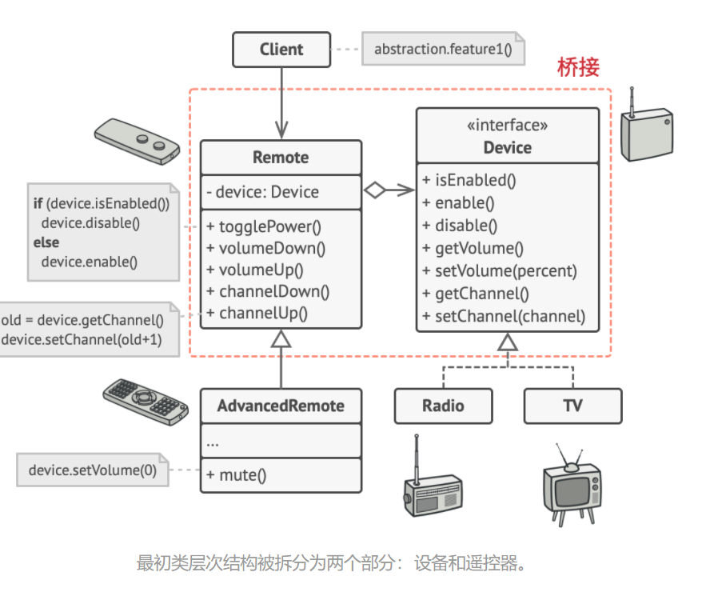
伪代码：
// “抽象部分” 定义了两个类层次结构中 “控制” 部分的接口。 | |
// 它管理着一个指向 “实现部分” 层次结构中对象的引用，并会将所有真实工作委派给该对象。 | |
class RemoteControl is | |
protected field device: Device | |
constructor RemoteControl(device: Device) is | |
this.device = device | |
method togglePower() is | |
if (device.isEnabled()) then | |
device.disable() | |
else | |
device.enable() | |
method volumeDown() is | |
device.setVolume(device.getVolume() - 10) | |
method volumeUp() is | |
device.setVolume(device.getVolume() + 10) | |
method channelDown() is | |
device.setChannel(device.getChannel() - 1) | |
method channelUp() is | |
device.setChannel(device.getChannel() + 1) | |
// 你可以独立于设备类的方式从抽象层中扩展类。 | |
class AdvancedRemoteControl extends RemoteControl is | |
method mute() is | |
device.setVolume(0) | |
// “实现部分” 接口声明了在所有具体实现类中通用的方法。它不需要与抽象接口相 | |
// 匹配。实际上，这两个接口可以完全不一样。通常实现接口只提供原语操作，而 | |
// 抽象接口则会基于这些操作定义较高层次的操作。 | |
interface Device is | |
method isEnabled() | |
method enable() | |
method disable() | |
method getVolume() | |
method setVolume(percent) | |
method getChannel() | |
method setChannel(channel) | |
// 所有设备都遵循相同的接口。 | |
class Tv implements Device is | |
// ... | |
class Radio implements Device is | |
// ... | |
// 客户端代码中的某个位置。 | |
tv = new Tv() | |
remote = new RemoteControl(tv) | |
remote.togglePower() | |
radio = new Radio() | |
remote = new AdvancedRemoteControl(radio) |
优点：
满足了：
- 单一职责原则
- 开闭原则
- 透明性
缺点： 对高内聚的类使用该模式可能会让代码更加复杂
https://refactoringguru.cn/design-patterns/bridge/java/example
# 3. 组合模式
简而言之，组合模式就是只对树的分支进行递归调用。即将对象组合成树状结构，并且能像独立对象一样使用它们。
组合模式的执行方式相当于：在部队里，干什么事情都是由长官先发号施令，再由下级人员分配任务执行。
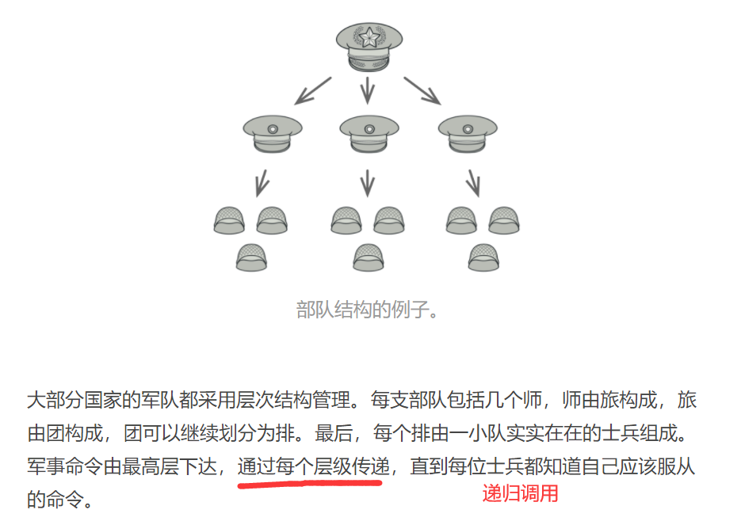
# 结构
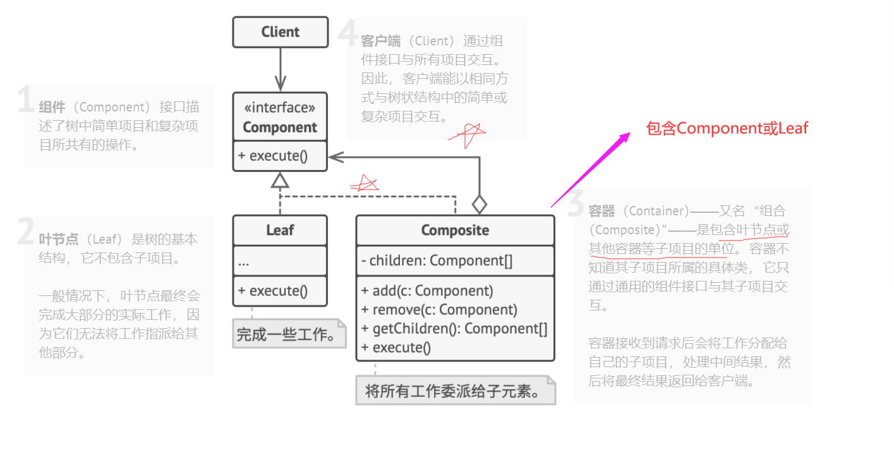
# 应用背景
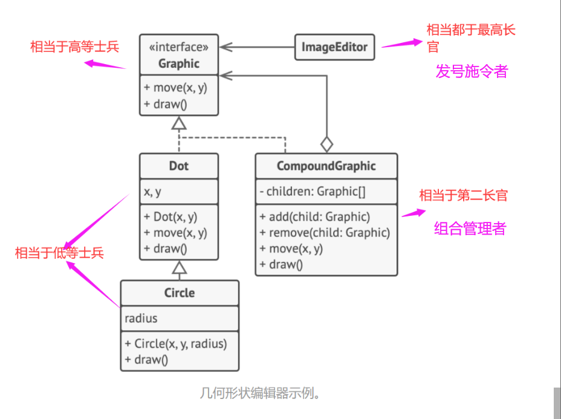
# 透明组合
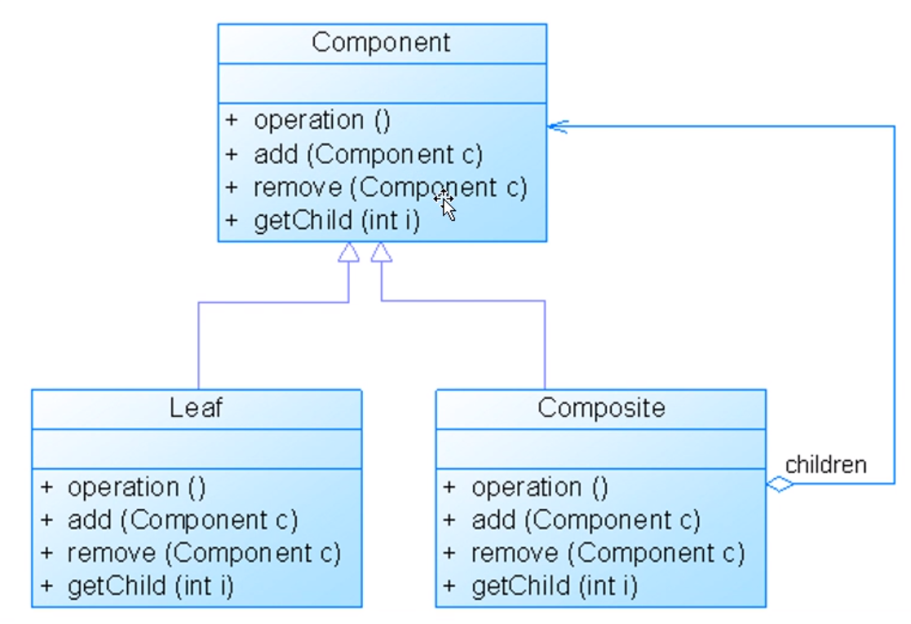
# 安全组合
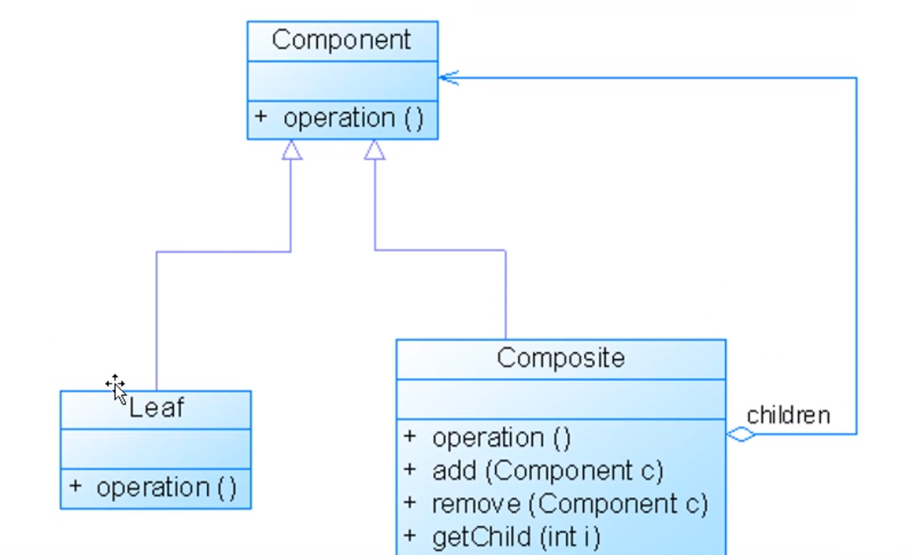
优点：
- 添加新的构件变得容易
- 递归
- 包含了叶子对象和容器对象的类层次结构
缺点：
- 抽象性，需要把握共性并糅合在一起。
# 4. 装饰模式
简而言之，装饰模式的过程就像穿衣服，天气热可以穿短袖，天气冷可以加件外套，天气再次变热的时候可以随时脱掉外套。
# 结构
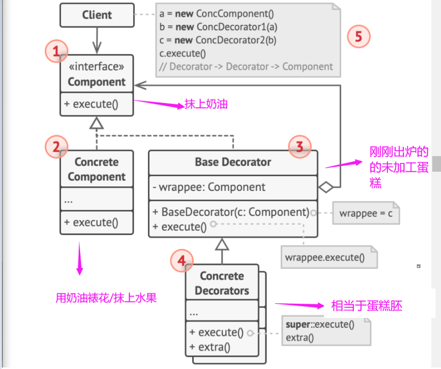
- 部件 （Component） 声明封装器和被封装对象的公用接口。
- 具体部件 （Concrete Component） 类是被封装对象所属的类。 它定义了基础行为， 但装饰类可以改变这些行为。
- 基础装饰 （Base Decorator） 类拥有一个指向被封装对象的引用成员变量。 该变量的类型应当被声明为通用部件接口， 这样它就可以引用具体的部件和装饰。 装饰基类会将所有操作委派给被封装的对象。
- 具体装饰类 （Concrete Decorators） 定义了可动态添加到部件的额外行为。 具体装饰类会重写装饰基类的方法， 并在调用父类方法之前或之后进行额外的行为。
- 客户端 （Client） 可以使用多层装饰来封装部件， 只要它能使用通用接口与所有对象互动即可。
# 应用背景
对敏感数据进行压缩和加密， 从而将数据从使用数据的代码中独立出来。
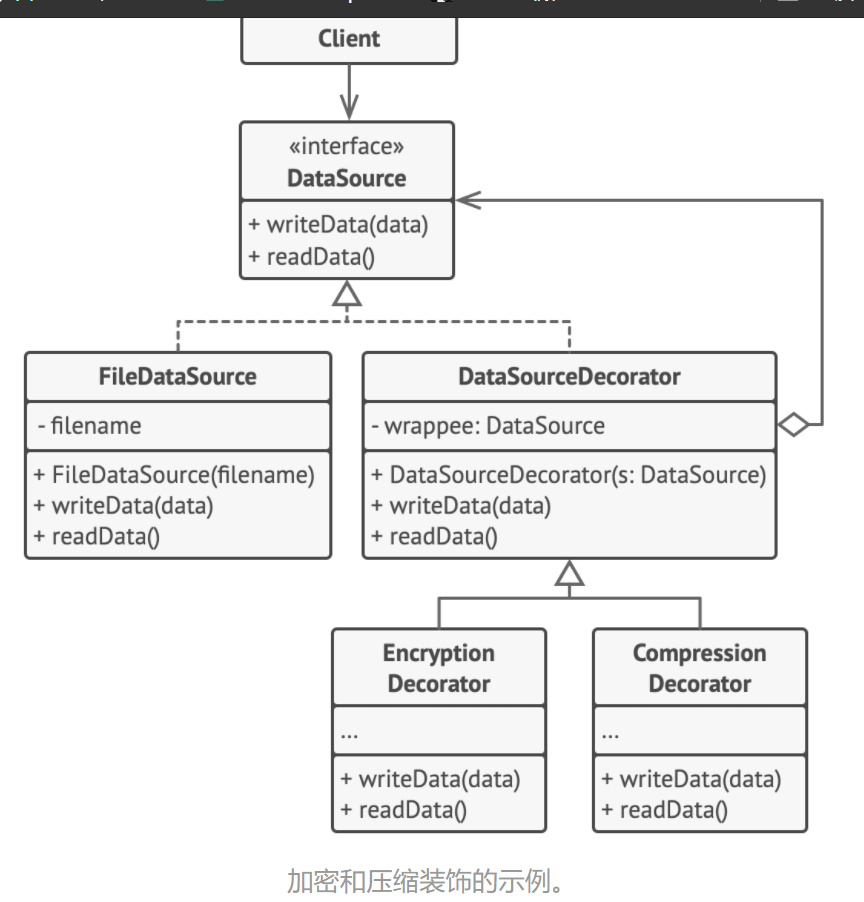
伪代码
// 装饰可以改变组件接口所定义的操作。 | |
interface DataSource is | |
method writeData(data) | |
method readData():data | |
// 具体组件提供操作的默认实现。这些类在程序中可能会有几个变体。 | |
class FileDataSource implements DataSource is | |
constructor FileDataSource(filename) { ... } | |
method writeData(data) is | |
// 将数据写入文件。 | |
method readData():data is | |
// 从文件读取数据。 | |
// 装饰基类和其他组件遵循相同的接口。该类的主要任务是定义所有具体装饰的封 | |
// 装接口。封装的默认实现代码中可能会包含一个保存被封装组件的成员变量，并 | |
// 且负责对其进行初始化。 | |
class DataSourceDecorator implements DataSource is | |
protected field wrappee: DataSource | |
constructor DataSourceDecorator(source: DataSource) is | |
wrappee = source | |
// 装饰基类会直接将所有工作分派给被封装组件。具体装饰中则可以新增一些 | |
// 额外的行为。 | |
method writeData(data) is | |
wrappee.writeData(data) | |
// 具体装饰可调用其父类的操作实现，而不是直接调用被封装对象。这种方式 | |
// 可简化装饰类的扩展工作。 | |
method readData():data is | |
return wrappee.readData() | |
// 具体装饰必须在被封装对象上调用方法，不过也可以自行在结果中添加一些内容。 | |
// 装饰必须在调用封装对象之前或之后执行额外的行为。 | |
class EncryptionDecorator extends DataSourceDecorator is | |
method writeData(data) is | |
// 1. 对传递数据进行加密。 | |
// 2. 将加密后数据传递给被封装对象 writeData（写入数据）方法。 | |
method readData():data is | |
// 1. 通过被封装对象的 readData（读取数据）方法获取数据。 | |
// 2. 如果数据被加密就尝试解密。 | |
// 3. 返回结果。 | |
// 你可以将对象封装在多层装饰中。 | |
class CompressionDecorator extends DataSourceDecorator is | |
method writeData(data) is | |
// 1. 压缩传递数据。 | |
// 2. 将压缩后数据传递给被封装对象 writeData（写入数据）方法。 | |
method readData():data is | |
// 1. 通过被封装对象的 readData（读取数据）方法获取数据。 | |
// 2. 如果数据被压缩就尝试解压。 | |
// 3. 返回结果。 | |
// 选项 1：装饰组件的简单示例 | |
class Application is | |
method dumbUsageExample() is | |
source = new FileDataSource("somefile.dat") | |
source.writeData(salaryRecords) | |
// 已将明码数据写入目标文件。 | |
source = new CompressionDecorator(source) | |
source.writeData(salaryRecords) | |
// 已将压缩数据写入目标文件。 | |
source = new EncryptionDecorator(source) | |
// 源变量中现在包含： | |
// Encryption > Compression > FileDataSource | |
source.writeData(salaryRecords) | |
// 已将压缩且加密的数据写入目标文件。 | |
// 选项 2：客户端使用外部数据源。SalaryManager（工资管理器）对象并不关心 | |
// 数据如何存储。它们会与提前配置好的数据源进行交互，数据源则是通过程序配 | |
// 置器获取的。 | |
class SalaryManager is | |
field source: DataSource | |
constructor SalaryManager(source: DataSource) { ... } | |
method load() is | |
return source.readData() | |
method save() is | |
source.writeData(salaryRecords) | |
//... 其他有用的方法... | |
// 程序可在运行时根据配置或环境组装不同的装饰堆桟。 | |
class ApplicationConfigurator is | |
method configurationExample() is | |
source = new FileDataSource("salary.dat") | |
if (enabledEncryption) | |
source = new EncryptionDecorator(source) | |
if (enabledCompression) | |
source = new CompressionDecorator(source) | |
logger = new SalaryManager(source) | |
salary = logger.load() | |
// ... |
使用场景
动态
透明
给单个对象添加职责
可以动态的被撤销
# 5. 外观模式
亦称门面模式，能为程序库、 框架或其他复杂类提供一个简单的接口。
简而言之，当你通过电话给商店下达订单时，接线员就是该商店的 “外观”，她为你提供了一个 ---- 同购物系统、 支付网关和各种送货服务进行互动的简单语音接口。
# 结构
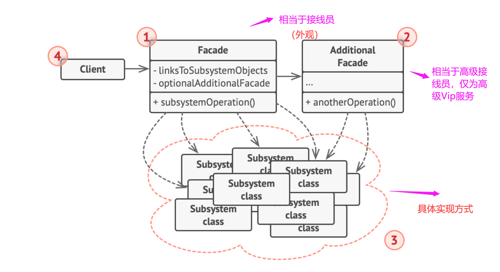
外观 （Facade） 提供了一种访问特定子系统功能的便捷方式， 其了解如何重定向客户端请求， 知晓如何操作一切活动部件。
创建附加外观 （Additional Facade） 类可以避免多种不相关的功能污染单一外观， 使其变成又一个复杂结构。 客户端和其他外观都可使用附加外观。
复杂子系统 （Complex Subsystem） 由数十个不同对象构成。 如果要用这些对象完成有意义的工作， 你必须深入了解子系统的实现细节， 比如按照正确顺序初始化对象和为其提供正确格式的数据。
子系统类不会意识到外观的存在， 它们在系统内运作并且相互之间可直接进行交互。
客户端 （Client） 使用外观代替对子系统对象的直接调用。
伪代码：
// 这里有复杂第三方视频转换框架中的一些类。我们不知晓其中的代码，因此无法 | |
// 对其进行简化。 | |
class VideoFile | |
// ... | |
class OggCompressionCodec | |
// ... | |
class MPEG4CompressionCodec | |
// ... | |
class CodecFactory | |
// ... | |
class BitrateReader | |
// ... | |
class AudioMixer | |
// ... | |
// 为了将框架的复杂性隐藏在一个简单接口背后，我们创建了一个外观类。它是在 | |
// 功能性和简洁性之间做出的权衡。 | |
class VideoConverter is | |
method convert(filename, format):File is | |
file = new VideoFile(filename) | |
sourceCodec = new CodecFactory.extract(file) | |
if (format == "mp4") | |
destinationCodec = new MPEG4CompressionCodec() | |
else | |
destinationCodec = new OggCompressionCodec() | |
buffer = BitrateReader.read(filename, sourceCodec) | |
result = BitrateReader.convert(buffer, destinationCodec) | |
result = (new AudioMixer()).fix(result) | |
return new File(result) | |
// 应用程序的类并不依赖于复杂框架中成千上万的类。同样，如果你决定更换框架， | |
// 那只需重写外观类即可。 | |
class Application is | |
method main() is | |
convertor = new VideoConverter() | |
mp4 = convertor.convert("funny-cats-video.ogg", "mp4") | |
mp4.save() |
# 使用场景：
- 如果你需要一个指向复杂子系统的直接接口，且该接口的功能有限则可以使用外观模式。
- 如果需要将子系统组织为多层结构可以使用外观
优点：可以让自动代码独立于复杂的子系统